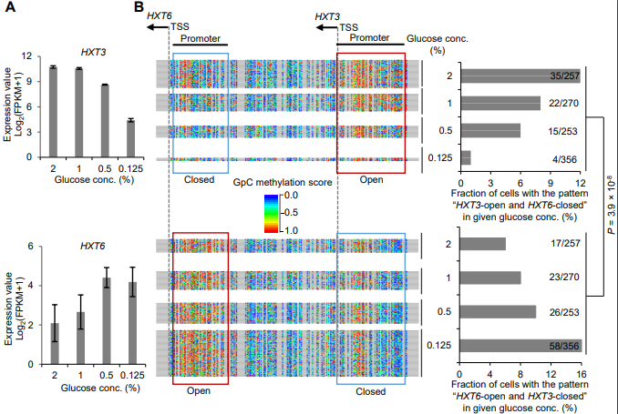
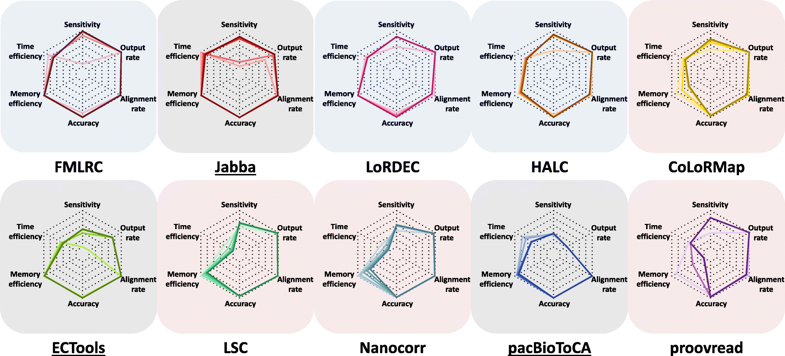
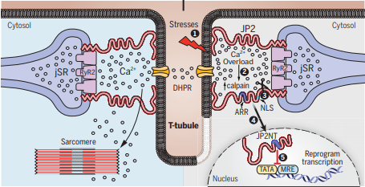
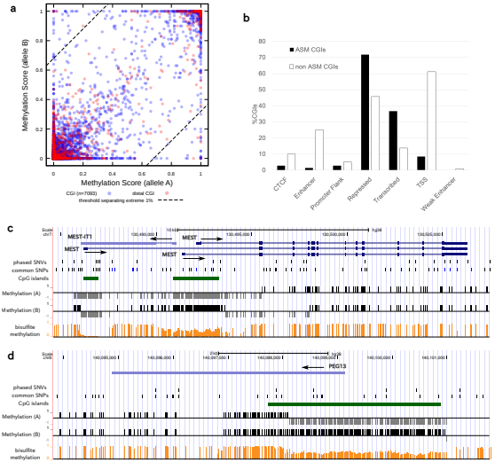
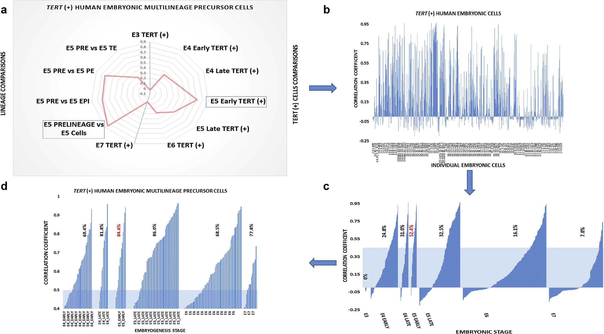
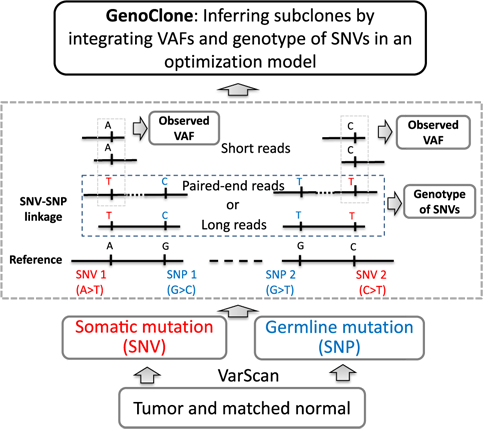
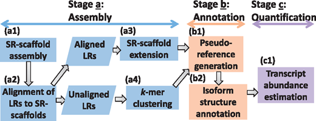

Openings
- The Au Lab is seeking candidates for two postdoctoral research scholar positions to work on sequencing analyses:
- 1) Postdoctoral Research Scholar in bioinformatics method development:
- 2) Postdoctoral Research Scholar in computational biology
- We are looking for a postdoctoral scholar to develop statistical and computational/algorithmic methods for high-throughput sequencing data analyses, such as transcriptome and epigenetics using PacBio and Oxford Nanopore Technologies. Background on mathematics, statistics, computer science or degree in a related field is desirable.
- We are looking for a postdoctoral scholar in biology background. Our lab performs world leading science in development process and cancer research. Our team focuses on making meaningful advances to understand development process and cancer, using cutting edge technologies (third generation sequencing technology) to create authentic models and gain novel biological insight in transcriptome and epigenetics level. A typical candidate would have skills in including but not limited to implementing basic in-house bioinformatics tools, collaborating with statistician and computational biologists to elucidate biological discovery and mining out biological insights. Background on biology, computational biology or bioinformatics is desirable.
Strong ability in statistical analysis or computer programming (python/perl, C/C++, R, Matlab) is desirable.
The postdoctoral research scholars will have the opportunity to collaborate with internationally recognized biomedical scientists at University of Iowa Carver College of Medicine, Stanford University, University of Oxford and Pacific Biosciences.
Latest Publications

Single-molecule long-read sequencing reveals the chromatin basis of gene expression.
Wang, Y., Wang, A., Liu, Z., Thurman, A., Powers, L.S., Zou, M., Hefel, A., Li, Y., Zabner, J., Au, K.F.
Genome Res. 2019. [Manuscript]
| Genome-wide chromatin accessibility and nucleosome occupancy profiles have been widely investigated, while the long-range dynamics remains poorly studied at the single-cell level. Here we present a new experimental approach MeSMLR-seq (methyltransferase treatment followed by single-molecule long-read sequencing) for long-range mapping of nucleosomes and chromatin accessibility at single DNA molecules, and thus achieve comprehensive-coverage characterization of the corresponding heterogeneity. MeSMLR-seq offers direct measurements of both nucleosome-occupied and nucleosome-evicted regions on a single DNA molecule, which is challenging for many existing methods. We applied MeSMLR-seq to haploid yeast, where single DNA molecules represent single cells, and thus we could investigate the combinatorics of many (up to 356) nucleosomes at long range in single cells. We illustrated the differential organization principles of nucleosomes surrounding the transcription start site for silently- and actively-transcribed genes, at the single-cell level and in the long-range scale... |  |

A comparative evaluation of hybrid error correction methods for error-prone long reads
Fu, S., Wang, A., Au, K.F.
Genome Biology. 2019. [Manuscript]
| Third-generation sequencing technologies have advanced the progress of the biological research by generating reads that are substantially longer than second-generation sequencing technologies. However, their notorious high error rate impedes straightforward data analysis and limits their application. A handful of error correction methods for these error-prone long reads have been developed to date. The output data quality is very important for downstream analysis, whereas computing resources could limit the utility of some computing-intense tools. There is a lack of standardized assessments for these long-read error-correction methods. |  |

EC coupling structural protein junctophilin-2 encodes a stress-adaptive transcription regulator.
Guo, A., Wang, Y., Chen, B., Wang, Y. ,Yuan, J., Zhang, L., Hall, D., Wu, J., Shi, Y., Zhu, Q., Chen, C., Thiel, W.H.,
Zhan, X., Weiss, R.M, Zhan, F., Musselman, C., Pufall, M., Zhu, W., Au, K.F. , Hong, J., Anderson, M.E., Grueter, C.E., Song, L.S.
Science. 2018. [Manuscript]
| Junctophilin-2 (JP2) is a structural protein required for normal excitation-contraction (E-C) coupling. After cardiac stress, JP2 is cleaved by the calcium ion-dependent protease calpain, which disrupts the E-C coupling ultrastructural machinery and drives heart failure progression. We found that stress-induced proteolysis of JP2 liberates an N-terminal fragment (JP2NT) that translocates to the nucleus, binds to genomic DNA, and controls expression of a spectrum of genes in cardiomyocytes. Transgenic overexpression of JP2NT in mice modifies the transcriptional profile, resulting in attenuated pathological remodeling in response to cardiac stress. Conversely, loss of nuclear JP2NT function accelerates stress-induced development of hypertrophy and heart failure in mutant mice. These data reveal a self-protective mechanism in failing cardiomyocytes that transduce mechanical information (E-C uncoupling) into salutary transcriptional reprogramming in the stressed heart. |  |
A Statistical Method for Observing Personal Diploid Methylomes and Transcriptomes with Single-Molecule Real-Time Sequencing.
Suzuki, Y., Wang, Y., Au, K.F., Morishita, S.
# Co-corresponding author
Genes. 2018. [Manuscript]
| We address the problem of observing personal diploid methylomes, CpG methylome pairs of homologous chromosomes that are distinguishable with respect to phased heterozygous variants (PHVs), which is challenging due to scarcity of PHVs in personal genomes. Single molecule real-time (SMRT) sequencing is promising as it outputs long reads with CpG methylation information, but a serious concern is whether reliable PHVs are available in erroneous SMRT reads with an error rate of ∼15%. To overcome the issue, we propose a statistical model that reduces the error rate of phasing CpG site to 1%, thereby calling CpG hypomethylation in each haplotype with >90% precision and sensitivity. Using our statistical model, we examined GNAS complex locus known for a combination of maternally, paternally, or biallelically expressed isoforms, and observed allele-specific methylation pattern almost perfectly reflecting their respective allele-specific expression status, demonstrating the merit of elucidating comprehensive personal diploid methylomes and transcriptomes. |  |
Single cell expression analysis of primate-specific retroviruses-derived HPAT lincRNAs in viable human blastocysts identifies embryonic cells co-expressing genetic markers of multiple lineages.
Glinsky, G., Durruthy-Durruthy, J., Wossidlo, M., Grow, E.J., Weirather, J.L., Au, K.F., Wysocka, J., Sebastiano, V.
Heliyon. 2018. [Manuscript]
| Chromosome instability and aneuploidies occur very frequently in human embryos, impairing proper embryogenesis and leading to cell cycle arrest, loss of cell viability, and developmental failures in 50–80% of cleavage-stage embryos. This high frequency of cellular extinction events represents a significant experimental obstacle challenging analyses of individual cells isolated from human preimplantation embryos. We carried out single cell expression profiling of 241 individual cells recovered from 32 human embryos during the early and late stages of viable human blastocyst (VHB) differentiation. Classification of embryonic cells was performed solely based on expression patterns of human pluripotency-associated transcripts (HPAT), which represent a family of primate-specific transposable element-derived lincRNAs highly expressed in human embryonic stem cells and regulating nuclear reprogramming and pluripotency induction... |  |
Revealing tumor heterogeneity of breast cancer by utilizing the linkage between somatic and germline mutations.
Zou, M., Jin, R., Au, K.F.#
Briefings in Bioinformatics. 2018. (in press) [Manuscript]
| The intra-tumor heterogeneity is associated with cancer progression and therapeutic resistance, such as in breast cancer. While the existing methods for studying tumor heterogeneity only analyze variant allele frequency (VAF), the genotype of variant is also informative for inferring subclones, which can be detected by long reads or paired-end reads. We developed GenoClone to integrate VAF with the genotype of variant innovatively, so it showed superior performance of inferring the number of subclones, estimating the fractions of subclones and identifying somatic single-nucleotide variants composition of subclones. When GenoClone was applied to 389 TCGA breast cancer samples, it revealed extensive intra-tumor heterogeneity. We further found that a few somatic mutations were relevant to the late stage of tumor evolution, including the ones at the oncogene PIK3CA and the tumor suppress gene TP53. Moreover, 52 subclones that were identified from 167 samples shared high similarity of somatic mutations, which were clustered into three groups with the sizes of 24, 14 and 14... |  |
IDP-denovo: de novo transcriptome assembly and isoform annotation by hybrid sequencing.
Fu, S., Ma Y., Yao, H., Xu, Z., Chen, S., Song, J., Au, K.F.
Bioinformatics. Volume 34, Issue 13, 2018, Pages 2168–2176. [Manuscript]
| In the past years, the long read (LR) sequencing technologies, such as Pacific Biosciences and Oxford Nanopore Technologies, have been demonstrated to substantially improve the quality of genome assembly and transcriptome characterization. Compared to the high cost of genome assembly by LR sequencing, it is more affordable to generate LRs for transcriptome characterization. That is, when informative transcriptome LR data are available without a high-quality genome, a method for de novo transcriptome assembly and annotation is of high demand. |  |
Research Focus
- RNA-seq and Third Generation Sequencing
- Stem cell transcriptome analysis
- Proteomics
- We are interested in methodology research of Third Generation Sequencing (TGS) (especially for PacBio and Oxford Nanopore sequencing).
Au lab is working on both hybrid sequencing (Second Generation Sequencing (SGS) + TGS) and TGS-alone methodology research.
Our research interests include but not limited to alternative splicing, isoform construction, gene fusion and quantitative analysis.
- Au lab is applying the hybrid sequencing method on ESC, iPSC and preimplantation embryo, to deeply study the transcriptome differences between stem cells.
- Protein identification and novel splice detections from tandem Mass Spec are our research interests. Au lab is developing statistical methods for Integration of Mass Spec and sequencing data, in order to solve difficult proteomics problems.
Collaborators
Currently, we have very close ongoing collobrations with:- Wing H. Wong's Lab at Stanford
Pacific Biosciences (PacBio)
Bina Technologies
Renee Reijo Pera's Lab at Stanford
Jack H. Wong's Lab at Houston Methodist Research Institute
Vittorio Sebastiano's Lab at Stanford
David Buck and the Oxford Genomics Centre at the Wellcome Trust Centre for Human Genetics
Xiujie Wang's Lab at Beijing Institute of Genomics, Chinese Academy of Sciences
Yungui Yang's Lab at Institute for Genetics and Developmental Biology, Chinese Academy of Sciences
Xin Zhiguo Li's Lab at University of Rochester
News
 06-15-2018: Shuhua Fu, Anqi Wang and Andrew Thurman are going to make presentations in ISMB 2018, July 7th, Chicago.
06-15-2018: Shuhua Fu, Anqi Wang and Andrew Thurman are going to make presentations in ISMB 2018, July 7th, Chicago.
Topics:
IDP-denovo: de novo transcriptome assembly and isoform annotation by hybrid sequencing. (Shuhua Fu)
Theoretical analysis of graph-based and alignment-based hybrid error correction methods for error-prone long reads. (Anqi Wang)
Gene isoform abundance quantification with Third Generation transcriptome sequencing. (Andrew Thurman)
02-23-2018: IDP-denovo paper is published
IDP-denovo: de novo transcriptome assembly and isoform annotation by hybrid sequencing.
Fu, S., Ma Y., Yao, H., Xu, Z., Chen, S., Song, J., Au, K.F.
Bioinformatics 2018. [Manuscript]
02-07-2016: AlignQC paper is released
Comprehensive comparison of Pacific Biosciences and Oxford Nanopore Technologies and their applications to transcriptome analysis [version 1; referees: awaiting peer review].
Weirather, J.L.*, de Cesare, M.*, Wang, Y.*, Piazza, P., Vittorio, S., Wang, X.J., Buck, D., Au, K.F.
F1000Research 2017, 6:100 [Manuscript]
* These authors contributed equally to this work
You can also check out the Latest AlignQC Software here if you are interested in using it to assess long read alignments.
11-28-2016: IDP-ASE paper is released
IDP-ASE: haplotyping and quantifying allele-specific expression at the gene and gene isoform level by hybrid sequencing.Deonovic, B., Wang, Y., Weirather, J., Wang, X.J., Au, K.F.
Nucleic Acids Research. 2016. [Manuscript]
 IDP 0.1.8
IDP 0.1.8